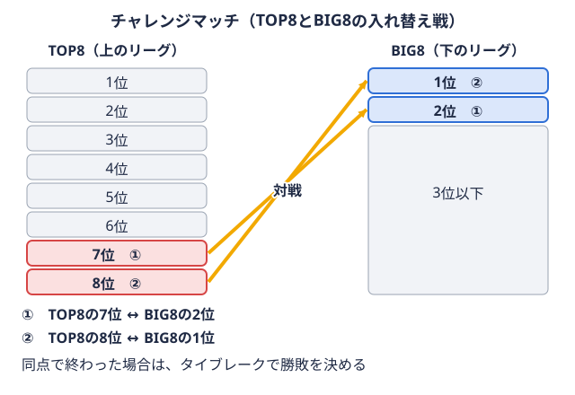

進路 2026-09-08
大学アメフト部は未経験でも入れる？入部の実態と練習の流れ
はじめての方向け
大学に入ったらアメフトをやってみたい、でも高校では未経験――そんな理由で入部をためらっている方は少なくありません。アメフトは接触が激しい競技という印象が強く、「経験者じゃないとついていけないのでは」と不安に感じるのも自然なことです。しかし実際には、関東の大学アメフト部の多くが未経験者を主力として受け入れており、経験の有無よりも入部後の取り組み方が重要になります。この記事では、関東学生アメリカンフットボール連盟（KCFA）TOP8所属チームの公式情報をもとに、未経験入部の実態と入部後の流れを整理します。
大学アメフト部の多くは未経験者が中心
複数の大学アメフト部が、公式サイトで未経験者の割合を具体的に公表しています。
- 日本体育大学アメリカンフットボール部（TOP8所属）：「約7割の選手が大学からアメリカンフットボールを始めています」とし、「高校時未経験でも自分の努力次第でレギュラー選手として活躍できる可能性は十分にある」と説明しています
- 早稲田大学BIG BEARS（TOP8所属）：「部員の約半分は未経験からスタートしています」とし、未経験からスタメンに定着した部員の実例も紹介しています
いずれもTOP8という関東最上位リーグに所属するチームであり、「強豪だから経験者ばかり」というイメージとは異なる実態が見えてきます。もちろん比率はチームによって差がありますが、大学から始めて主力になった選手が珍しくない競技であることは、複数のチームの公式情報からも裏付けられます。
なぜ大学から始めても通用するのか
理由の一つは、アメフトが11人制で役割が細分化された競技であることです。パスを投げる、ボールを持って走る、壁になって相手を止める（ブロック）、ボールを持つ相手を倒して止める（タックルボールを持つ相手を、体を使って止めること。攻撃のラインの端に立つ選手の呼び名でもある。用語辞典で見る）など、プレーごとに求められる能力が大きく異なるため、体格や運動特性に応じて活躍できるポジションを見つけやすい競技だといえます。高校での競技経験よりも、入部後にどれだけ体づくりと基礎練習に取り組めるかが、活躍できるかどうかを左右する部分が大きいのです。
 用語辞典で見る・RBQBからボールを受け取って走り、陣地を進める選手。足の速さと当たり負けしない強さが求められる。用語辞典で見る・WRフィールドの外側に広がり、投げられたパスをキャッチして陣地を進める選手。用語辞典で見る・TE攻撃のライン（壁役の選手たち）の端に並び、壁役とパスキャッチの両方をこなす選手。用語辞典で見る・OLスクリメージライン上に並ぶ5人の壁役。パスを投げる選手を守り、走る選手の道を作る。用語辞典で見る）。役割ごとに立つ位置が違う
用語辞典で見る・RBQBからボールを受け取って走り、陣地を進める選手。足の速さと当たり負けしない強さが求められる。用語辞典で見る・WRフィールドの外側に広がり、投げられたパスをキャッチして陣地を進める選手。用語辞典で見る・TE攻撃のライン（壁役の選手たち）の端に並び、壁役とパスキャッチの両方をこなす選手。用語辞典で見る・OLスクリメージライン上に並ぶ5人の壁役。パスを投げる選手を守り、走る選手の道を作る。用語辞典で見る）。役割ごとに立つ位置が違う 用語辞典で見る・LB守備の最前列のすぐ後ろに立ち、走るプレーを止め、パスも守る選手。守備の要といわれる。用語辞典で見る・CB守備の外側に立ち、パスを受けにくる相手選手に付いて、パスを防ぐ選手。用語辞典で見る・S）。役割ごとに立つ位置が違う
用語辞典で見る・LB守備の最前列のすぐ後ろに立ち、走るプレーを止め、パスも守る選手。守備の要といわれる。用語辞典で見る・CB守備の外側に立ち、パスを受けにくる相手選手に付いて、パスを防ぐ選手。用語辞典で見る・S）。役割ごとに立つ位置が違うまた、多くのチームは未経験者向けに基礎から丁寧に指導する体制を整えています。いきなり実戦形式の練習に加わるのではなく、フォームや基本ルールの習得期間を経てから徐々にステップアップしていく流れが一般的です。
入部を検討する際に確認しておきたいこと
未経験からの入部自体は珍しくありませんが、実際に入部を決める前には次のような点をチームごとに確認しておくと安心です。
- 練習頻度と活動日数：週何日、どの時間帯に活動しているか
- 未経験者向けの指導体制：初心者だけのグループ練習があるか、専属コーチがいるか
- 部員数と目標：全国トップを目指すチームか、楽しみながら競技を続けるチームかで雰囲気が異なる場合があります
- 怪我のリスクへの対応：メディカルスタッフやトレーナーの体制
これらは大学によって差があるため、気になるチームがあれば説明会や練習見学に参加し、実際の雰囲気を確認することをおすすめします。
まずは関東のチームを知ることから
入部先を検討するにあたって、まずは関東にどんなチームがあり、どのリーグに所属しているかを知っておくと判断材料になります。
- TOP8 チーム一覧 ― 関東最上位リーグの8校
- BIG8 チーム一覧 ― TOP8に次ぐリーグの所属校
- TOP8・BIG8とは｜仕組み・出場校・BIG8との違い ― 2つのリーグの違いをまとめた解説記事
「TOP8」「BIG8」という区分や、リーグ間の入れ替え戦上位リーグの下位チームと、下位リーグの上位チームが戦う、リーグの入れ替えをかけた試合。 
参考リンク
本記事は各大学アメフト部が公式サイトで公表している情報をもとに編集部が構成した一般的な解説です。未経験者の割合や指導体制はチームによって異なるため、入部を検討する際は必ず各チームの最新の公式情報・説明会でご確認ください。
オフシーズン・引退後に、長期インターンという選択
部活で培った力を実務で試す。16タイプ診断（30秒）で合う企業がわかります。